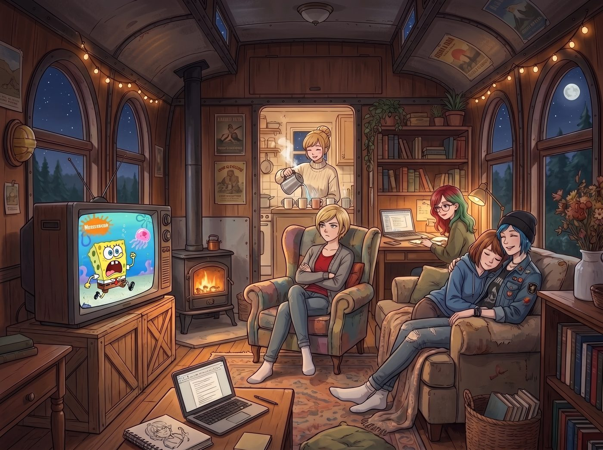

較小的惡（下）：倒數計時

電影的片尾字幕在電視螢幕上緩緩滾動，伴隨著那令人窒息的第四顆髒彈倒數歸零的滴答聲。
二號車廂裡的空氣彷彿凝固了。沒有人說話，只有暖爐發出微弱的嗡嗡聲。
「我發誓……」Chloe 瞪著螢幕，手裡的爆米花已經完全冷透，她猛地把遙控器砸在沙發墊上，「我只是想搜一部 Samuel L. Jackson 拿著槍大罵『Motherfucker』的無腦爽片，為什麼點開了這部見鬼的《戰略特勤組》（Unthinkable）？這他媽是什麼操蛋的結局？！」
沒有人回答她。這部電影將「電車難題」推向了最殘酷、最挑戰人類道德底線的極端。
Kate 把自己深深埋進毛毯裡，臉色蒼白。電影裡 H（Samuel L. Jackson 飾）準備對那兩個無辜孩子動手的畫面，即使最終只是關上燈的「假折磨」，依然讓她感到生理上的反胃。
「這是不對的……」Kate 聲音顫抖，「那是孩子。如果我們為了解除炸彈而變成剝奪無辜兒童人權的野獸，那我們拯救下來的這個世界，還值得拯救嗎？」
「但如果不變成野獸，那個隱藏在 FBI 慶功宴附近的第四顆炸彈就會把所有人炸成灰。」
Victoria 放下手中的咖啡杯，語氣冷得像冰塊。作為車廂裡最奉行實用主義的人，她毫不避諱地直視這個血淋淋的邏輯： 「H 的數學簡單又完美：18公斤核原料，每個炸彈4.5公斤，18除以4.5等於4。事實證明他是對的。Brody（女主角）的道德潔癖在最後一刻害死了所有人。如果妳已經跨過了折磨恐怖份子的底線，卻在最後一關為了所謂的『良知』停手，這不叫高尚，這叫偽善的半途而廢。」
「妳怎麼能這麼冷血，Victoria？」Chloe 煩躁地抓著頭髮，「那是兩個甚至連發生了什麼都不知道的小孩！電影就是在故意噁心人，它把妳逼到一個死角，讓妳必須在『當個虐童變態』和『讓幾百萬人去死』之間選一個。這是一個被操縱的爛局！」
一直沉默的 Max 輕輕抱住了自己的膝蓋。
她是這裡唯一真正做過這種選擇的人。在那個狂風暴雨的燈塔上，她曾在「犧牲 Chloe」和「毀滅阿卡迪亞灣」之間做過抉擇。
「當你真的站在那個位置上時，」Max 的聲音很輕，卻帶著一種令人心碎的沉重，「數學是不管用的，Victoria。18除以4.5當然等於4，但在按下開關的那一刻，你腦子裡只有那兩個孩子的哭聲。選擇了『Greater Good』，你這輩子就只能在噩夢裡活著。Brody 不是蠢，她只是崩潰了。」
爭論陷入了僵局。幾天前，她們才剛剛在駭客事件中達成共識，唾棄了情報局長那種用平民當誘餌的「Lesser Evil（較小的惡）」。但現在，這部電影用最極端的倒數計時，狠狠扇了她們一巴掌。
所有人的目光不由自主地轉向了坐在螢幕前的 Lily。
Lily 依然保持著平靜。她推了推圓框眼鏡，目光越過眾人，看著螢幕上已經靜止的畫面。她的腦海中正在進行一場高速的邏輯重組。
「我們之前的結論並沒有錯，」Lily 開口了，她的聲音像一把精準的手術刀，切開了電影帶來的感性迷霧，「但我們必須區分『系統性的常態』與『崩潰邊緣的奇異點（Singularity）』。」
她站起身，走到白板前，拿起麥克筆畫了一條線。
「NSA 為了放長線釣大魚而容忍醫院被勒索，那是常態下的系統性作惡。政客和我的父母一樣，他們擁有資源、時間和權力，卻選擇將『Lesser Evil』當作一種行政工具，去榨取別人的價值，美其名曰『為了未來』。這種情況下，惡就是惡，絕不能妥協。」
接著，Lily 在線的盡頭畫了一個重重的黑點，代表炸彈倒數歸零的瞬間。
「但《Unthinkable》的場景不同。它不是政策，它是系統徹底失效後的絕境。當倒數計時只剩幾分鐘，當 18 除以 4.5 的物理現實擺在面前時，這已經不再是道德哲學的討論範疇，而是純粹的生存博弈。」
Lily 轉過身，看著震驚的眾人。
「在這種極端絕境下，H 關上燈假裝折磨孩子，本質上已經超越了『惡』的定義，這是一種將痛苦量化到極致的求生演算。Brody 的失敗，在於她用『常態下的道德』，去衡量『末日下的生存』。」
「所以……妳覺得 H 是對的？」Chloe 嚥了一口唾沫。
「不，我覺得這是一個死局。」Lily 放下麥克筆，眼神裡閃過一絲無奈的悲哀，「如果世界真的把我們逼到了必須折磨孩子才能活下去的地步，那就證明人類的防禦系統、情報網路和社會結構已經爛透了。這時候再討論誰更道德，就像在沉沒的鐵達尼號上爭論誰該洗碗一樣毫無意義。」
車廂裡再次安靜下來。
她們並沒有推翻幾天前的結論。她們依然痛恨那些西裝革履、將無辜者當作棋子的高位者。但這部電影讓她們深刻地意識到：這個操蛋的世界，有時候真的會把人逼進一個沒有任何正確答案的屠宰場。
「好了，夠了。」Chloe 突然站起來，一把搶過遙控器，飛快地按著按鈕，「我受夠這些沉重的狗屁哲學了。我現在需要高強度的化學糖分和絕對的弱智內容來洗刷我的大腦。」
螢幕畫面一閃，切換到了 Nickelodeon 頻道。黃色的海綿寶寶正尖叫著在海底追逐一個水母。
Kate 鬆了一口氣，默默去廚房泡了五杯熱可可；Victoria 雖然翻了個白眼，但並沒有抱怨電視裡的兒童節目；Max 則靠在 Chloe 肩膀上，緊繃的肌肉終於放鬆下來。
而 Lily 坐在自己的工作站前，看著螢幕上無憂無慮的卡通水母。她知道「電車難題」永遠沒有標準答案，但在這個小小的、偏離軌道的二號車廂裡，她們至少可以選擇在炸彈還未倒數的日子裡，拼盡全力不去成為那個推桿的人。